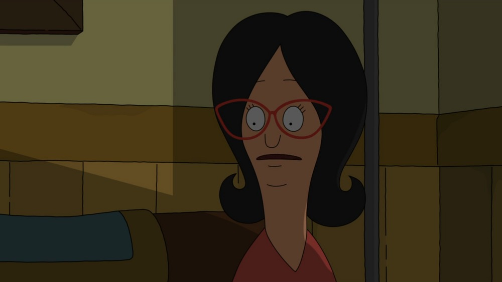
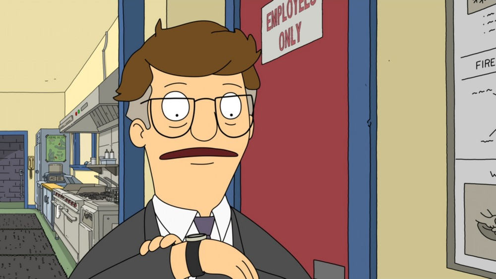

Introduction to Lourence's Comfort TV Show
Bob's Burgers, a chaotic story of Bob and his Burgers... Get it? Cause it's Bob and he does burgers... Never mind! I was trying to reference a Bob's Burgers joke in Season 3 Episode 12 around the 11:40 minute timestamp. See for yourself!
|
|
|||
|---|---|---|---|
|  | |||
|  | |||
Brief Breakdown
Bob's Burgers is an american sitcom created by Loren Bouchard for the Fox Broadcasting Company. The show has been running since January 19th, 2011 and has 15 seasons and counting.
A feature film was released on May 27 th, 2022.
Plot
The show centers on a family that runs a hamburger restaurant. Loren Bouchard stated Bob's Burgers came out because of Fox's animation brand centers mostly on family, but that he also wanted to dabble in workplace comedy. The show is said to fill the void created by the cancellation of King of the Hill (which was cancelled in 2010), which former Bob's Burgers executive producer Jim Dauterive worked on for nearly its entire run.
The Iconic Intro
Season 3 Episode 1The Running Gags
Bob's Bugers has a plethora of running gags and inside jokes. One my favourite running gag in Bob's Burgers is from Season 1 Episode 2. This is one of the defining character trait of Teddy.